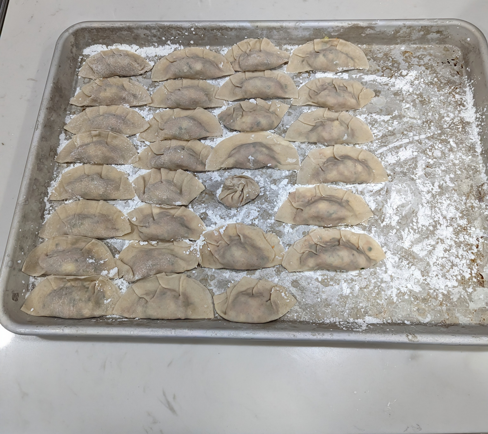

Gyoza

Description
Would you like to spend hours on end repeating the same task over and over again?
If that sounds like you, why not try making gyoza! All you need is gyoza wrappers, pork, spices, and lots of time.
Ingredients
- gyoza wrappers
- ground pork
- green onion
- garlic
- ginger
- soy sauce
- seasame oil
- cabbage
Directions
- Cook cabbage until liquid is gone
- Add all other ingredients and cook
- Let filling cool
- Set up baking tray with parchment paper and cornflour
- Holding wrapper, place spoon full of filling in center. Wet edges of wrapper and pinch closed. Repeat
- Place finished gyoza in freezer. Or cook!
- Saute finished gyoza until bottom is brown, then add water and steam with lid on. Nom!